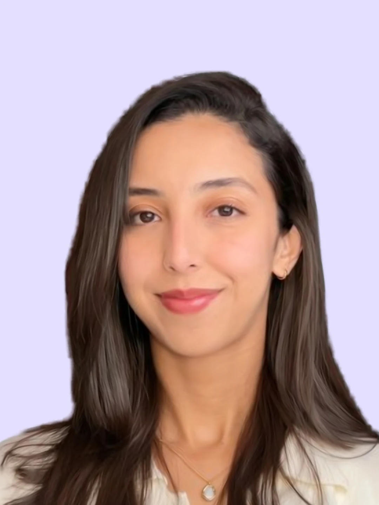

Nous ne croyons pas aux recettes toutes faites.
Leadvice est un cabinet de conseil en stratégie marketing et en acquisition client, fondé à Casablanca en 2022. Nous aidons les entreprises à transformer leur marketing en clients, en reliant la stratégie, la création, les campagnes et les chiffres. Nous conseillons, et nous exécutons ce que nous conseillons.
Ce que nous ne vendons pas.
Pas plus de campagnes.
De meilleures décisions.
Pas plus de contenu.
De meilleurs angles.
Pas plus de leads.
De meilleurs prospects.
Pas plus de reporting.
Plus de compréhension.
Un cabinet, pas une agence.
Une agence exécute ce qu'on lui demande. Nous commençons par vérifier que c'est la bonne chose à demander. Chaque mission démarre par un cadrage, avec un objectif clair : des prospects et des ventes, pas de la visibilité. Nous lisons les chiffres avec vous chaque semaine, nous adaptons la solution à votre situation au lieu de vendre un forfait, et nous restons attentives à la vision d'ensemble de votre entreprise, pas seulement à vos campagnes.
Notre engagement. Clair et mesurable.
Des résultats visibles sur votre activité.
Nous ne parlons pas de buzz ni de vues. Nous parlons de prospects, de ventes et de croissance que vous pouvez mesurer.
Une stratégie à votre mesure.
Adaptée à votre marché, à vos moyens et à vos priorités. Nous vous conseillons comme si c'était notre propre entreprise, et chaque recommandation est applicable.
Un accompagnement transparent.
Un interlocuteur clair et réactif. Vous savez ce qui est fait, pourquoi on le fait, et ce que ça rapporte. Pas de jargon, pas de promesse floue.
Notre méthode.
Diagnostiquer
Nous commençons par écouter. Puis nous analysons vos publicités, vos contenus et vos performances, pour trouver ce qui freine votre acquisition.
Structurer
Nous construisons un plan simple, hiérarchisé, actionnable. Publicité, contenu, stratégie, organisation : tout est aligné sur vos objectifs.
Exécuter
Nous mettons en place les actions et pilotons les campagnes, avec vos équipes ou à leur place.
Mesurer
Nous suivons les chiffres chaque semaine. Vous recevez des bilans qui servent à décider.
Optimiser
Nous ajustons ce qui doit l'être. Chaque semaine, le système apprend un peu plus.
Derrière les données, il y a toujours une décision humaine.
Amira Dounassre
Cofondatrice. Acquisition, digital, transformation.
Ingénieure d'État en informatique de l'École Mohammadia d'Ingénieurs, diplômée du Mastère Spécialisé de l'ESSEC en stratégie, transformation digitale et innovation, Amira a commencé dans l'informatique bancaire avant de se consacrer à l'acquisition. Elle conçoit et pilote les campagnes Meta Ads et Google Ads de Leadvice, de la structure de l'entonnoir à l'optimisation du coût d'acquisition. Sa conviction : un bon chiffre ne vaut rien s'il ne mène pas à une décision.

Nada Moujibi
Cofondatrice, responsable stratégie. Stratégie, audit, business.
Ingénieure diplômée de l'École Mohammadia d'Ingénieurs, Nada a passé trois ans comme auditrice financière senior chez EY, sur des portefeuilles de clients de secteurs très variés. Elle apporte à Leadvice la rigueur de l'audit et une lecture business des sujets marketing : elle mène les diagnostics, les missions de stratégie et le cadrage des accompagnements. Sa conviction : on ne corrige bien que ce qu'on a vraiment compris.
Questions fréquentes.
Qu'est-ce qui distingue un cabinet de conseil d'une agence marketing ?
Une agence exécute un brief. Un cabinet commence par vérifier que le brief est le bon : à qui vous vendez, avec quel message, sur quels canaux, et comment on saura si ça marche. Chez Leadvice, nous faisons les deux, le conseil et l'exécution, avec un seul objectif : des clients.
Par quoi commence un accompagnement Leadvice ?
Par un diagnostic : un échange de 45 minutes, offert, pendant lequel nous regardons vos campagnes, vos chiffres et votre offre. Si nous pouvons vous aider, nous vous faisons ensuite une proposition adaptée à votre situation.
Combien de temps faut-il pour voir des résultats en acquisition ?
Les premiers leads arrivent souvent dans les jours qui suivent le lancement d'une campagne. Pour juger la qualité des prospects et optimiser sérieusement, comptez quelques semaines de données. Les effets d'un travail de stratégie, eux, se mesurent sur plusieurs mois.
Gérez-vous les campagnes vous-mêmes ou conseillez-vous seulement ?
Les deux. Nous pouvons concevoir, lancer et piloter vos campagnes Meta Ads et Google Ads, ou accompagner vos équipes qui les gèrent en interne.
Travaillez-vous avec nos équipes internes ?
Oui, c'est même ce que nous préférons. Nous travaillons avec votre direction, votre équipe marketing et vos commerciaux, pour que les chiffres des campagnes rencontrent ceux des ventes.
Sur quels canaux intervenez-vous ?
Principalement Meta Ads (Facebook, Instagram) et Google Ads (Search, Display), ainsi que les contenus pour les réseaux sociaux. Le choix des canaux dépend toujours de votre audience et de votre objectif.
Comment mesurez-vous la performance ?
Avec les indicateurs qui mènent à vos ventes : coût par lead, part de leads qualifiés, coût par opportunité, coût d'acquisition client. Nous les suivons chaque semaine et nous les définissons avec vous au démarrage.
Intervenez-vous en dehors de Casablanca ?
Oui, partout au Maroc, et à distance pour les entreprises qui ciblent le Maroc ou les Marocains résidant à l'étranger.
Parlons de votre croissance.
45 minutes, offert. Nous regardons vos campagnes, vos chiffres et votre offre. Vous repartez avec ce qui freine votre acquisition et par quoi commencer.
Demander un diagnostic